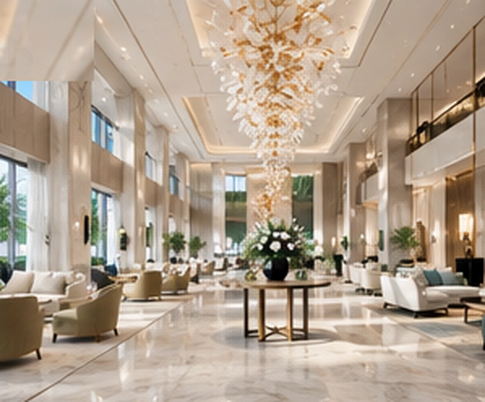

Portfolio / Hospitality
Commercial hotel interior visualization.
A selected hospitality concept series exploring the atmosphere and spatial hierarchy of public areas, guestrooms, dining, wellness and arrival spaces.

Building a coherent guest experience
Hospitality images are usually reviewed as a family rather than as isolated views. Lighting, furniture language, material tone and visual density need to feel connected across the arrival, social and private zones. A confirmed image list also helps the team decide where a wide establishing view is useful and where a closer material or furniture moment communicates more.
How a similar scope begins
Useful inputs include current plans and elevations, available models, a room and view list, material schedules, furniture direction, lighting references and brand guidelines. We confirm the source-file version and feedback points before production. Identifying information is omitted here for confidentiality; the imagery is concept visualization and does not represent a completed built project.
Explore commercial and hospitality rendering or read the visualization brief guide.